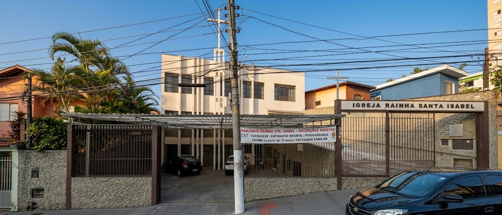

Paróquia
Rainha
Santa Isabel
Uma comunidade de fé, oração e acolhimento. Rua Elias Gannam, 331.
- Arquidiocese
- São Paulo
- Região
- Santana
- Decanato
- São Judas Tadeu

Horários das missas
Celebrações na Paróquia e na Capela Maranata durante a semana e domingos.
Catequese
Formação cristã para crianças a partir de 5 anos, crisma e catequese de adultos.
Secretaria paroquial
Atendimento de terça a sábado, agendamento de sacramentos e intenções.
Como chegar
Endereços da Paróquia Rainha Santa Isabel e da Capela Maranata no mapa.
Horários das missas e celebrações
Venha celebrar a Eucaristia conosco. Nossas celebrações acontecem na Igreja Matriz e na Capela Maranata.
Paróquia Rainha Santa Isabel
Quarta-feira
Missa semanal da comunidade
Primeira sexta-feira do mês
Missa em louvor ao Sagrado Coração de Jesus
Domingo
Dia do Senhor (missas dominicais com a assembleia)
Capela Maranata
Domingo
CelebraçãoMissa dominical na capela
11h30Encontros pastorais na Capela Maranata:
Às sextas-feiras, às 19h30, acontecem também as reuniões das Pastorais da comunidade neste mesmo endereço.
Aviso Paroquial: Em solenidades e datas especiais, confirme os horários com a secretaria.
Conheça nossa paróquia
Uma história de fé dedicada a Deus e ao próximo, construída pela presença viva e atuante de nossos fiéis na Casa Verde desde 1967.
Uma comunidade viva a serviço do Reino de Deus
A Paróquia Rainha Santa Isabel é um espaço sagrado de fé católica, adoração e comunhão cristã no bairro de Casa Verde / Vila Bandeirantes, na Zona Norte de São Paulo. Desde 1967, acolhemos famílias, crianças, jovens e idosos ao redor do altar de Cristo.
Brasão oficial paroquial
Paróquia Rainha Santa Isabel (Casa Verde, SP) · 02/10/1967
Liturgia e sacramentos
Celebração digna da Santa Missa, batismos, matrimônios e momentos de oração para toda a comunidade.
Formação e catequese
Itinerários completos de iniciação à vida cristã para crianças, jovens crismandos, famílias e adultos.
Fraternidade e juventude
Espaço acolhedor para a Juventude Acutis e pastorais que atuam com dedicação e amor ao próximo.
Catequese e formação cristã
A paróquia oferece diferentes etapas de formação cristã para cada fase da vida, desde a primeira infância até a vida adulta.
Pré-catequese
Primeiros passos no conhecimento de Jesus através de histórias bíblicas e dinâmicas adaptadas aos pequenos.
Catequese Infantil
1ª EucaristiaCaminho formativo em direção à Primeira Eucaristia, introduzindo a criança nos mistérios da oração e sacramentos.
Catequese Familiar
Vivência formativa integrada com a participação ativa de pais ou responsáveis, fortalecendo a fé no lar.
Perseverança
Aprofundamento da amizade com Deus após a Primeira Comunhão, mantendo a criança engajada na vida fraterna.
Crisma
SacramentoConfirmação do Santo Batismo e efusão do Espírito Santo, preparando os jovens para o testemunho cristão.
Catequese de Adultos
Preparação para os Sacramentos da Iniciação Cristã (Batismo, Eucaristia e Crisma) em encontros acolhedores.
Deseja matricular seu filho ou iniciar sua preparação?
As inscrições são formalizadas diretamente pela secretaria paroquial. Você pode esclarecer dúvidas sobre datas e documentos.
Participe das pastorais
A vida de nossa comunidade se fortalece pelo compromisso generoso de cada pastoral. Una-se a nós para partilhar seus talentos no serviço da Igreja.
Reuniões semanais das pastorais
Pastoral Litúrgica
Preparação dos ritos sagrados, leituras dominicais e acolhimento dos fiéis.
Pastoral da Música
Canto litúrgico e louvor que elevam o coração da assembleia a Deus nas missas.
Pastoral da Caridade
Assistência e solidariedade fraterna às famílias, inspirada em Santa Isabel.
Pastoral do Dízimo
Partilha e corresponsabilidade na sustentação da missão evangelizadora.
* Para saber quais pastorais estão em atividade e falar com a coordenação, procure a secretaria paroquial.
Juventude Acutis
Inspirados por São Carlo Acutis, nosso grupo de jovens cultiva a amizade com Cristo, a devoção à Eucaristia e a fraternidade em comunidade.
São Carlo Acutis
Apóstolo da Internet
Jovem canonizado pela Igreja Católica em 2025, que fez da Santa Eucaristia o centro de sua juventude e nos ensina que a santidade é possível no dia a dia.
“A Eucaristia é a minha autoestrada para o Céu. Estar sempre unido a Jesus, esse é o meu projeto de vida.”
Um lugar para viver a fé autêntica entre amigos
A Juventude Acutis reúne os jovens da Paróquia Rainha Santa Isabel para partilhar a fé com leveza, profundidade e alegria. Encontros com adoração ao Santíssimo, partilhas e ação solidária.
Secretaria paroquial
Estamos à sua disposição para marcação de sacramentos, intenções de missa, informações sobre catequese e orientações pastorais.
Rua Elias Gannam, 331
Vila Bandeirantes / Casa Verde (São Paulo, SP) · CEP: 02515-050
* Confirme o horário do intervalo de almoço com a secretaria.
Localização e como chegar
Consulte separadamente os dois locais onde nossa comunidade se reúne para louvar a Deus e celebrar a fé.
Paróquia Rainha Santa Isabel
Igreja Matriz e secretaria paroquial
Rua Elias Gannam, 331
Vila Bandeirantes / Casa Verde (São Paulo, SP)
Sede paroquial com missas semanais e dominicais, batismos, casamentos e atendimento da secretaria.
Capela Maranata
Celebrações e reuniões pastorais
Rua Brigadeiro Xavier de Brito, 577
São Paulo, SP
Celebração da Santa Missa aos domingos às 11h30 e reuniões semanais das pastorais às sextas-feiras às 19h30.
Visualização no mapa
Rua Elias Gannam, 331 (Matriz)* Confira o trajeto antes de sair: obras e desvios podem alterar o caminho.
Redes sociais e comunicação
Permaneça conectado conosco e acompanhe as transmissões, avisos, formações e eventos de nossa comunidade.
Arquidiocese de São Paulo
@arquisp
Acompanhe as notícias pastorais, mensagens do Cardeal Arcebispo e comunicados arquidiocesanos.
Região Episcopal Santana
@regiaosantana
Informativos, celebrações solenes e a caminhada eclesial das paróquias da Região Santana na Zona Norte de SP.
Juventude Acutis
@juventude.acutis
Encontros, fotos, vigílias e o dinamismo da fé jovem em nossa paróquia inspirados por São Carlo Acutis.